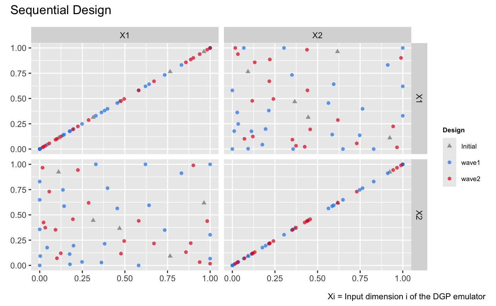
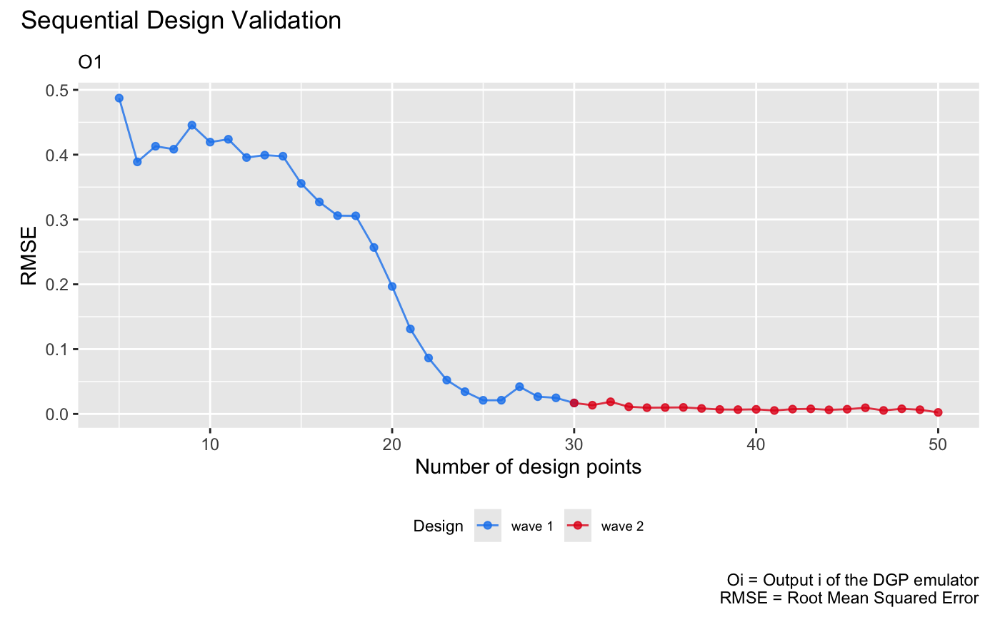
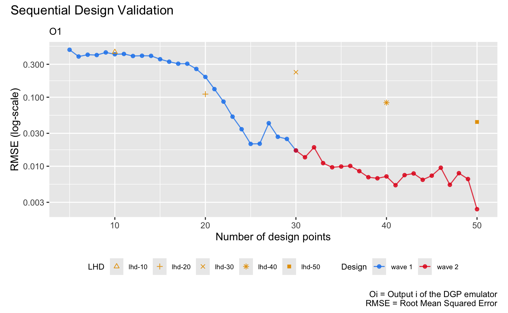

This vignette shows how to use the package to sequentially enrich the design for adaptive improvements and pruning of a DGP emulator.
Construct a synthetic simulator
We consider a non-stationary synthetic simulator which has a 2-dimensional input with the functional form (Ba and Joseph 2018) defined by:
f <- function(x) {
sin(1/((0.7*x[,1,drop=F]+0.3)*(0.7*x[,2,drop=F]+0.3)))
}Note that to provide the simulator for the sequential design below,
we have defined the above function such that its input x
and output are both matrices. The commands below generate the contour of
the function:
x1 <- seq(0, 1, length.out = 100)
x2 <- seq(0, 1, length.out = 100)
dat <- expand_grid(x1 = x1, x2 = x2)
dat <- mutate(dat, f = f(cbind(x1, x2)))
ggplot(dat, aes(x1, x2, fill = f)) + geom_tile() +
scale_fill_continuous(type = "viridis")
We can see from the figure above that the synthetic simulator exhibits more fluctuations on the bottom left of its input space while in the top-right part the simulator shows little variations.
We now specify a seed with set_seed() from the package
for reproducibility
set_seed(99)and generate an initial design with 5 design points using the maximin Latin hypercube sampler:
X <- maximinLHS(5,2)
Y <- f(X)To track the qualities of constructed emulators during the sequential design, we generate a validation dataset:
validate_x <- maximinLHS(200,2)
validate_y <- f(validate_x)DGP emulation with sequential designs
To start with the sequential design, we initialize a two-layered DGP emulator (with 2 GP nodes in the first layer and 1 GP node in the second layer) using the generated initial design:
m <- dgp(X, Y)## Auto-generating a 2-layered DGP structure ... done
## Initializing the DGP emulator ... done
## Training the DGP emulator:
## Iteration 500: Layer 2: 100%|██████████| 500/500 [00:01<00:00, 353.90it/s]
## Imputing ... doneWe then specify the boundaries of input parameters of f
for the sequential design to locate design points to be added:
The boundaries of input parameters are defined as a matrix with each
row giving the lower and upper limits of an input parameter. After the
boundaries are specified, we are ready to conduct the sequential design
to adaptively improve the emulator m via
design(). The function design() provides a
simple and flexible implementation of sequential designs for DGP
emulators. In this vignette, we only demonstrate its basic usage and
refer users to ?design for more advanced specifications,
e.g., on checkpoints to manually control the design progress and on
schedules to re-fit and validate emulators.
For illustrative purpose, we implement two waves of sequential
designs on m:
# 1st wave with 25 steps
m <- design(m, N = 25, limits = lim, f = f, x_test = validate_x, y_test = validate_y)## Initializing ... done
## * RMSE: 0.527337
## Iteration 1:
## - Locating ... done
## * Next design point: 0.868213 0.037359
## - Updating and re-fitting ... done
## - Validating ... done
## * RMSE: 0.541914
##
## ...
##
## Iteration 18:
## - Locating ... done
## * Next design point: 0.341178 0.003477
## - Updating and re-fitting ... done
## - Pruning 1 node(s) in layer 1 ... done
## - Re-fitting ... done
## - Validating ... done
## * RMSE: 0.107640
##
## ...
##
## Iteration 25:
## - Locating ... done
## * Next design point: 0.168364 0.984091
## - Updating and re-fitting ... done
## - Validating ... done
## * RMSE: 0.032189After the first wave of the sequential design, we see that 1 GP node is removed from the first layer by the automatic pruning of the DGP which leaves only one node in both the first and second layer of the DGP hierarchy respectively. This helps accelerate the inference of the DGP emulator in subsequent waves of the sequential design while maintaining accuracy. We now start the second wave of the sequential design:
# 2nd wave with 10 steps
m <- design(m, N = 10, limits = lim, f = f, x_test = validate_x, y_test = validate_y)## Initializing ... done
## * RMSE: 0.032189
## Iteration 1:
## - Locating ... done
## * Next design point: 0.215369 0.384567
## - Updating and re-fitting ... done
## - Validating ... done
## * RMSE: 0.017259
##
## ...
##
## Iteration 10:
## - Locating ... done
## * Next design point: 0.198905 0.873454
## - Updating and re-fitting ... done
## - Validating ... done
## * RMSE: 0.008300Finally, we resume the second wave with 10 additional iterations:
# 2nd wave with 10 additional steps
m <- design(m, N = 10, limits = lim, f = f, x_test = validate_x, y_test = validate_y, new_wave = FALSE)## Iteration 11:
## - Locating ... done
## * Next design point: 0.977752 0.011568
## - Updating and re-fitting ... done
## - Validating ... done
## * RMSE: 0.007264
##
## ...
##
## Iteration 20:
## - Locating ... done
## * Next design point: 0.258375 0.028753
## - Updating and re-fitting ... done
## - Validating ... done
## * RMSE: 0.003784After the sequential design is done, we can inspect the enriched
design by applying draw() to m:
draw(m, 'design') It can be seen from the figure
above that most of the added design points concentrate at the
bottom-left corner of the input space where the simulator f
exhibits more variations and thus needs more data to be well-emulated.
We can also visualize the changes of qualities (in terms of RMSEs wrt
the validation dataset) of emulators constructed during the three waves
of sequential designs:
draw(m, 'rmse')
Comparison to DGP emulators with space-filling designs
We build four DGP emulators with static space-filling Latin hypercube designs (LHD) of size 10, 20, 30, 40, and 50 respectively:
# DGP emulator with a LHD of size 10
X1 <- maximinLHS(10,2)
Y1 <- f(X1)
m1 <- dgp(X1, Y1, verb = F)
# DGP emulator with a LHD of size 20
X2 <- maximinLHS(20,2)
Y2 <- f(X2)
m2 <- dgp(X2, Y2, verb = F)
# DGP emulator with a LHD of size 30
X3 <- maximinLHS(30,2)
Y3 <- f(X3)
m3 <- dgp(X3, Y3, verb = F)
# DGP emulator with a LHD of size 40
X4 <- maximinLHS(40,2)
Y4 <- f(X4)
m4 <- dgp(X4, Y4, verb = F)
# DGP emulator with a LHD of size 50
X5 <- maximinLHS(50,2)
Y5 <- f(X5)
m5 <- dgp(X5, Y5, verb = F)We then extract their RMSEs
# validation of the DGP emulator with the LHD of size 10
m1 <- validate(m1, x_test = validate_x, y_test = validate_y, verb = F)
rmse1 <- m1$oos$rmse
# validation of the DGP emulator with the LHD of size 20
m2 <- validate(m2, x_test = validate_x, y_test = validate_y, verb = F)
rmse2 <- m2$oos$rmse
# validation of the DGP emulator with the LHD of size 30
m3 <- validate(m3, x_test = validate_x, y_test = validate_y, verb = F)
rmse3 <- m3$oos$rmse
# validation of the DGP emulator with the LHD of size 40
m4 <- validate(m4, x_test = validate_x, y_test = validate_y, verb = F)
rmse4 <- m4$oos$rmse
# validation of the DGP emulator with the LHD of size 50
m5 <- validate(m5, x_test = validate_x, y_test = validate_y, verb = F)
rmse5 <- m5$oos$rmse
# create a dataframe that stores the RMSEs of the four DGP emulators
rmse_static <- data.frame('N' = c(10, 20, 30, 40, 50), 'rmse' = c(rmse1, rmse2, rmse3, rmse4, rmse5), 'LHD' = c('lhd-10', 'lhd-20', 'lhd-30', 'lhd-40', 'lhd-50'))and add them to the sequential design validation plot (in log-scale) for comparisons:
draw(m, 'rmse', log = T) +
geom_point(data = rmse_static, mapping = aes(x = N, y = rmse, group = LHD, shape = LHD), color = '#E69F00', size = 1.5) +
scale_shape_manual(values = c(2, 3, 4, 8, 15))
It can be seen from the plot above that with static space-filling designs, the quality of an emulator may not be improved as the design size increases. This is because increasing the size of a space-filling design may not capture regions where the simulator exhibits more variations, and thus cause DGP emulators with higher RMSEs than those constructed through the sequential design.
See also
See Sequential Design II
for the sequential design of a bundle of DGP emulators with automatic
terminations.